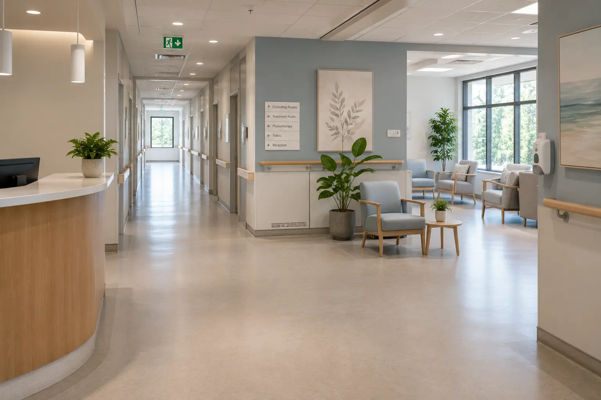

Healthcare Practices, Clinics, Care Homes & Retirement Facilities
Healthcare and aged-care environments need a measured response-not hurried, broad treatment. We assess the pest, affected area, occupants and daily routine before recommending a plan, helping Gauteng facilities address activity discreetly and with clear preparation, access and follow-up guidance.

A sensitive environment needs a considered response
Patients, residents, families and staff expect a well-managed environment. Prompt assessment helps limit uncertainty while protecting the facility's normal routine.
Age, mobility, health conditions and room use may affect how access and treatment should be planned. These details need to be understood before work begins.
A visible pest can concern residents, patients and visitors. A calm response and controlled communication help management address the problem without unnecessary alarm.
Consultations, meals, medication rounds, visiting hours and resident routines leave little room for poorly coordinated servicing.
Different rooms, different treatment considerations
Bedrooms, consulting rooms, waiting areas and lounges are inspected carefully, with privacy, mobility and access requirements considered.
Food preparation, dry storage, serving points and dining areas can attract cockroaches, ants, flies and rodents.
Warmth, fabrics, trolleys and the movement of linen can conceal or transport certain pests between different parts of a facility.
Moisture, pipe penetrations and drainage routes can support cockroach or fly activity and allow movement behind walls.
Medical consumables, paper goods, cleaning supplies and low-traffic rooms create undisturbed shelter and hidden routes.
External bins, delivery areas, vegetation, drains and boundary conditions influence rodents, flies, ants and other incoming pressure.
Careful planning before treatment
We consider the confirmed pest, affected room, occupants, food, equipment and operational requirements before choosing the treatment approach.
A nominated contact helps confirm access, restricted zones, resident or patient considerations and the best time for service.
Instructions are provided before treatment so staff understand which areas need preparation and when normal use may resume.
Work is focused on confirmed activity, harbourage and movement routes rather than applying unnecessary treatment across unaffected spaces.
Visits can be planned around quieter times where practical, helping reduce disturbance to occupants, visitors and staff.
Reports record findings, treated areas and recommendations for the facility's maintenance and pest-management files.
A controlled response from first report to follow-up
We establish what was found, where it was seen, who uses the area and whether there are mobility, access or operational considerations.
The assessment extends to nearby rooms, services, food, moisture, waste and possible entry or transfer points.
Management receives a clear plan explaining the treatment area, access requirements, preparation and temporary restrictions where applicable.
Completed work and recommendations are documented, with follow-up or scheduled monitoring arranged where the pest or facility risk requires it.
Scaled to the premises and level of care
A small medical practice has different risks and access requirements from a residential care facility. We adapt the inspection and service plan to the actual site.
Medical, dental and allied-health practices with consulting rooms, receptions, staff facilities and shared-building services.
Retirement and assisted-living facilities combining private rooms, communal dining, gardens, laundries and care areas.
Clinics and managed care premises requiring coordinated access, documented servicing and minimal disruption to daily appointments.
Common facility pest pressures
Activity often centres on kitchens, dining rooms, drains, bathrooms, waste and staff areas where food and moisture are available.
Rodents may enter through doors, service gaps, drains, roof spaces and landscaped perimeters, damaging supplies and creating hygiene concerns.
Correct identification matters. We inspect reported rooms and possible transfer routes before recommending targeted treatment and follow-up.
Questions from healthcare and care-facility managers
Yes. We discuss room use, appointments, meals, visiting periods and occupant considerations with management before agreeing on a suitable service time.
That depends on the pest, treatment method and room. We provide preparation, access and re-entry requirements before treatment so suitable arrangements can be made.
Inspection and correct identification come first. We assess the reported room, furniture and likely transfer routes before defining the treatment scope and preparation requirements.
Yes. We can coordinate the pest-control scope and access requirements with the facility's nominated representative. Your organisation remains responsible for its internal clinical and compliance procedures.
Yes. The suitable frequency depends on the facility layout, food and waste activity, surrounding environment, pest history and management requirements.
Yes. Each Gauteng site can have an individual risk-based scope while using a consistent communication and reporting structure across the portfolio.
Other commercial facilities we support
Tell us what has been reported, which area is affected and what access considerations apply. We will help you define the next step.